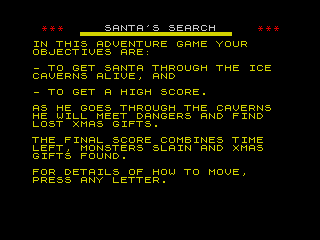
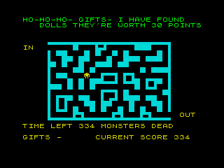
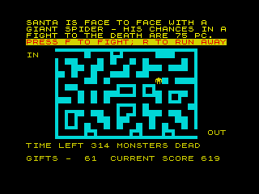
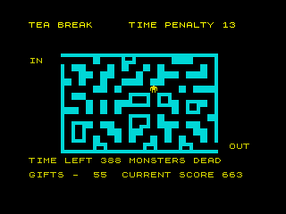
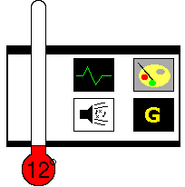

|
Santa's Search - Unknown - 198? |
|  | Santa's Search gets points for a truly unique premise for a Christmas game starring everyone's favourite red-suited, bearded and physically impossible friend. You see, he's wandering around a number of ice-caverns in search of toys to give to all the lovely little boys and girls of the world whilst he tries to escape. Adding to the drama and conflict are a number of evil monsters in the caverns which would like nothing better than to deprive the world of its toys come Christmas morn, and a time limit; once that runs out, poor old Santa will drop dead from starvation. The text bit after loading explains the situation clearly and left me rather intrigued as to what would come next: a platform game like level two of Rick Dangerous II? An RPG set deep within the ice caverns? A side-scrolling beat'em-up like Target; Renegade where toys were scattered around as bonuses? |
|  | Well, the answer is a single-screen maze game similar to those "draw-a-line-through-the-maze-to-get-Max-to-the-other-side" things in children's puzzle books, next to the two pictures with ten differences between them. The maze is much simpler and smaller than these offerings, but things are complicated by the random events that befall ol' Santa as he works he way through the maze. Take a step forward and maybe Santa will find some toys and get more points, or perhaps he'll take a tea break and lose time or maybe bump into a deadly giant spider. As you can probably imagine, the guiding little Santa around is incredibly dull and simplistic, but, odd as it may sound, it is these random events that give this game the few degrees it has managed to scrape. How many games give Santa the chance to engage in hand-to-hand combat with a giant spider and beat it senseless? |
| However, the flaws are far more numerous and painful than can be redeemed by comedy battles. To start with, the combat is randomly worked out by the computer given percentages of possible success and you don't even get to see it. You also have to sit there whilst you are penalised for time, rather than the relevant amount simply being deducted from the total. Inspiring you with claustrophobic panic for the few seconds of your life remaining it does not. The random events are all well and good, but disappointing for the entire scope of the game, especially one whose self-professed purpose is to have Santa escape and get higher scores. Without any skill on your part. One word: WHY?! |  |
| One asks why the computer doesn't just randomly wander through the maze for you; it would require the same amount of skill on the part of the player. It must be said that guiding the little Santa through the maze does become strangely compelling after a while, but only in same way watching paint dry does after you've been looking at for ten hours straight and totally forgotten what fun and enjoyable things are like. |  |
|  |
Graphics: 19% Perfunctory text and basic block-graphics. Sound: 31% A couple of tuneless warbles and a good clicking sound as Santa moves. Gameplay: 9% It involves all the skill and cunning of something over which you have no control. Gamelife: 3% It becomes curiously compelling if it's all you ever play, but try anything else and you'll never load it again. Summary: Those mazes in kid's puzzle books are far more entertaining. If maze wandering is your kind of thing, buy a couple of them and a pencil. Just don't start at the exit, eh? Jon Hyde |
Back to Contents